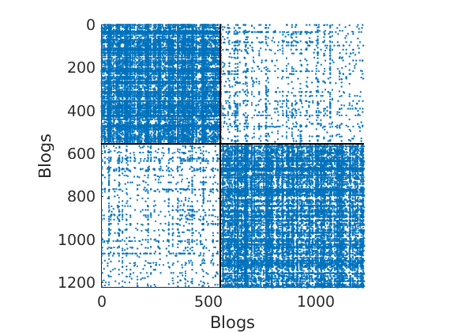

Sparse Networks with Overlapping Communities (SNetOC) package: demo_polblogs
This Matlab script performs posterior inference on a network of political blogs to find latent overlapping communities, using a Bayesian nonparametric approach.
For downloading the package and information on installation, visit the SNetOC webpage.
Reference:
- A. Todeschini, X. Miscouridou and F. Caron (2017) Exchangeable Random Measures for Sparse and Modular Graphs with Overlapping Communities. arXiv:1602.02114.
Authors:
- A. Todeschini, Inria
- X. Miscouridou, University of Oxford
- F. Caron, University of Oxford
Tested on Matlab R2017a. Requires the Statistics toolbox.
Last Modified: 01/2020
Contents
General settings
clear close all tstart = clock; % Starting time istest = true; % enable testing mode: quick run with smaller nb of iterations
In test mode, a smaller number of iterations is run. Although the sampler clearly has not converged yet, the method already recovers well the ground truth communities. To reproduce the results of the paper, set this value to false.
root = '.'; if istest outpath = fullfile(root, 'results', 'demo_polblogs', 'test'); else outpath = fullfile(root, 'results', 'demo_polblogs', date); end if ~isdir(outpath) mkdir(outpath); end % Add path addpath ./GGP/ ./CGGP/ ./utils/ set(0, 'DefaultAxesFontSize', 14) % Set the seed rng default
Load network of political blogs
Data can be downloaded from here.
load ./data/polblogs/polblogs.mat titlenetwork = 'Political blogosphere Feb. 2005'; name = 'polblogs'; labels = {'Blogs', 'Blogs'}; groupfield = 'name'; % meta field displayed for group plot % Transform the graph to obtain a simple graph G = Problem.A | Problem.A'; % make undirected graph G = logical(G-diag(diag(G))); % remove self edges (#3) % Collect metadata clear meta meta.name = cellstr(Problem.aux.nodename); meta.source = cellstr(Problem.aux.nodesource); meta.isright = logical(Problem.aux.nodevalue); meta.degree = num2cell(full(sum(G,2))); meta.groups = zeros(size(meta.isright)); meta.groups(~meta.isright) = 1; meta.groups(meta.isright) = 2; color_groups = [0 0 .8; .8 0 0]; label_groups = {'Left', 'Right'}; fn = fieldnames(meta); % Remove nodes with no edge (#266) ind = any(G); G = G(ind, ind); for i=1:length(fn) meta.(fn{i}) = meta.(fn{i})(ind); end % Plot adjacency matrix (sorted) figure('name', 'Adjacency matrix (sorted by ground truth political leaning)'); spy(G); xlabel(labels{2}) ylabel(labels{1})
% Shuffle nodes: irrelevant due to exchangeability, just to check we do not cheat! ind = randperm(size(G,1)); G = G(ind, ind); for i=1:length(fn) meta.(fn{i}) = meta.(fn{i})(ind); end % Plot adjacency matrix (unsorted) figure('name', 'Adjacency matrix (unsorted)'); spy(G); xlabel(labels{2}) ylabel(labels{1})
% Plot degree distribution figure('name', 'Empirical degree distribution'); hdeg = plot_degree(G); set(hdeg, 'markersize', 10, 'marker', 'o','markeredgecolor', 'none', 'markerfacecolor', [1, .75, .75]);
Posterior Inference using Markov chain Monte Carlo and point estimation
Users needs to start the parallel pool by using the command parpool to run multiple chains in parallel.
% Define the parameters of the prior p = 2; % Number of commmunities objprior = graphmodel('CGGP', p); % CGGP graph model with p communities % Define parameters of the MCMC sampler nchains = 3; if istest niterinit = 1000; niter = 10000; nsamples = 100; ndraws = 100; else niterinit = 10000; niter = 2e6; nsamples = 1000; ndraws = 500; end nburn = floor(niter/2); thin = ceil((niter-nburn)/nsamples); verbose = true; % Create the graphMCMC object objmcmc = graphmcmc(objprior, niter, 0, thin, nchains); % Run initialisation init = graphinit(objmcmc, G, niterinit);
----------------------------------- Start initialisation of the MCMC algorithm for CGGP ----------------------------------- End initialisation -----------------------------------
% Run MCMC sampler
objmcmc = graphmcmcsamples(objmcmc, G, verbose, init);
----------------------------------- Start MCMC for undirected CGGP graphs Nb of nodes: 1224x1224 - Nb of edges: 16715 (0 missing) Nb of chains: 3 - Nb of iterations: 10000 Estimated computation time: 0 hour(s) 3 minute(s) Estimated end of computation: 01-Feb-2020 17:43:48 ----------------------------------- Markov chain 1/3 ----------------------------------- i=2000 alp=3249.79 sig=-1.140 tau=2.07 a=0.26 0.21 b=1.43 1.03 w*=0.19 0.19 b2=2.96 2.13 alp2=1419.80 rhmc=0.78 rhyp=0.58 eps=0.026 rwsd=0.02 i=4000 alp=4982.05 sig=-1.448 tau=1.99 a=0.22 0.20 b=1.81 1.55 w*=0.28 0.26 b2=3.62 3.09 alp2=1834.40 rhmc=0.76 rhyp=0.61 eps=0.026 rwsd=0.02 i=6000 alp=4427.75 sig=-1.551 tau=1.62 a=0.20 0.17 b=1.99 1.92 w*=0.25 0.21 b2=3.21 3.10 alp2=2098.72 rhmc=0.77 rhyp=0.62 eps=0.026 rwsd=0.02 i=8000 alp=4211.75 sig=-1.656 tau=1.43 a=0.18 0.16 b=2.46 2.20 w*=0.29 0.19 b2=3.51 3.14 alp2=2336.68 rhmc=0.77 rhyp=0.62 eps=0.026 rwsd=0.02 i=10000 alp=3414.97 sig=-2.324 tau=1.02 a=0.19 0.15 b=5.43 5.08 w*=0.29 0.28 b2=5.52 5.16 alp2=3288.22 rhmc=0.77 rhyp=0.64 eps=0.026 rwsd=0.02 ----------------------------------- Markov chain 2/3 ----------------------------------- i=2000 alp=3246.03 sig=-1.072 tau=2.31 a=0.24 0.26 b=1.12 1.10 w*=0.18 0.25 b2=2.60 2.55 alp2=1323.28 rhmc=0.77 rhyp=0.56 eps=0.026 rwsd=0.02 i=4000 alp=4493.17 sig=-1.340 tau=2.00 a=0.19 0.23 b=1.19 1.61 w*=0.19 0.24 b2=2.38 3.23 alp2=1768.96 rhmc=0.76 rhyp=0.62 eps=0.026 rwsd=0.02 i=6000 alp=4308.25 sig=-1.421 tau=1.85 a=0.18 0.21 b=1.72 1.67 w*=0.22 0.32 b2=3.18 3.10 alp2=1796.74 rhmc=0.77 rhyp=0.62 eps=0.026 rwsd=0.02 i=8000 alp=4349.56 sig=-1.617 tau=1.48 a=0.16 0.21 b=2.55 2.63 w*=0.24 0.33 b2=3.78 3.89 alp2=2301.32 rhmc=0.76 rhyp=0.62 eps=0.026 rwsd=0.02 i=10000 alp=3910.44 sig=-2.229 tau=1.09 a=0.16 0.18 b=4.76 4.35 w*=0.35 0.32 b2=5.19 4.74 alp2=3225.01 rhmc=0.77 rhyp=0.63 eps=0.026 rwsd=0.02 ----------------------------------- Markov chain 3/3 ----------------------------------- i=2000 alp=3738.08 sig=-1.111 tau=2.46 a=0.26 0.22 b=1.29 1.06 w*=0.19 0.19 b2=3.17 2.61 alp2=1372.81 rhmc=0.78 rhyp=0.57 eps=0.026 rwsd=0.02 i=4000 alp=5398.35 sig=-1.522 tau=1.97 a=0.22 0.19 b=1.88 2.02 w*=0.34 0.23 b2=3.70 3.98 alp2=1929.61 rhmc=0.76 rhyp=0.59 eps=0.026 rwsd=0.02 i=6000 alp=4418.70 sig=-1.813 tau=1.39 a=0.20 0.17 b=3.14 2.35 w*=0.23 0.20 b2=4.36 3.26 alp2=2434.37 rhmc=0.77 rhyp=0.61 eps=0.026 rwsd=0.02 i=8000 alp=3651.00 sig=-2.261 tau=1.07 a=0.18 0.16 b=5.63 4.46 w*=0.20 0.26 b2=6.01 4.76 alp2=3152.50 rhmc=0.78 rhyp=0.63 eps=0.026 rwsd=0.02 i=10000 alp=2840.48 sig=-2.933 tau=0.87 a=0.16 0.15 b=7.24 8.36 w*=0.34 0.25 b2=6.31 7.29 alp2=4245.54 rhmc=0.76 rhyp=0.63 eps=0.026 rwsd=0.02 ----------------------------------- End MCMC Computation time: 0 hour(s) 3 minute(s) -----------------------------------
% Print summary in text file print_summary(['summary_' num2str(p) 'f.txt'], titlenetwork, G, niter, nburn, nchains, thin, p, outpath, tstart) % Save workspace save(fullfile(outpath, ['workspace_' num2str(p) 'f.mat']), '-v7.3')
% Log posterior approximation
[lp_nonlat, lp_lat, ll_nonlat, ll_lat] = logpost_approx(objmcmc, G);
% Compute identifiable parameters for ch = 1:size(objmcmc.samples, 2) S = objmcmc.samples(1,ch); objmcmc.samples(1,ch).varsigma1 = -S.alpha .* S.tau.^S.sigma ./ S.sigma; a_sigma = S.Fparam.a.*S.sigma; objmcmc.samples(1,ch).varsigma2 = -a_sigma./S.Fparam.b2; objmcmc.samples(1,ch).varsigma3 = a_sigma.*(S.sigma-S.Fparam.a-1)./(S.Fparam.b2.^2); end
discard burnin
objmcmc_noburn = objmcmc; objmcmc_noburn.samples = discard(objmcmc.samples, floor(nburn/objmcmc.settings.thin)); objmcmc_noburn.settings.nburn = nburn;
Point estimation of the model parameters
[estimates, C_st] = graphest(objmcmc_noburn);
----------------------------------- Start parameters estimation for CGGP graphs: 300 samples Estimated end of computation: 01-Feb-2020 17:44:39 (0.0 hours) |---------------------------------| |*********************************| End parameters estimation for CGGP graphs Computation time: 0.0 hours -----------------------------------
Plots
prefix = sprintf('%s_%df_', name, p); suffix = '';
% Plot Log posterior approximation iter = (1:size(lp_nonlat,1))*thin; plot_logpost(lp_nonlat, iter, [], 'Log-posterior', outpath, prefix, '_nonlat'); plot_logpost(lp_lat, iter, [], 'Log-posterior', outpath, prefix, '_lat'); % Plot log-posterior autocorr lp_nonlat_noburn = lp_nonlat(floor(nburn/niter*size(lp_nonlat, 1)):end, :); lp_lat_noburn = lp_lat(floor(nburn/niter*size(lp_lat, 1)):end, :); plot_autocorr_logpost(lp_nonlat_noburn, thin, 'Log-posterior', outpath, prefix, '_nonlat'); plot_autocorr_logpost(lp_lat_noburn, thin, 'Log-posterior', outpath, prefix, '_lat'); % Plot cost if ~isempty(C_st) plot_cost(C_st, outpath, prefix, suffix); end

% Identify each feature to left/right wing using ground truth % (This step would normally require a human interpretation of the features) [~, ind_features] = sort(median(estimates.w(meta.isright,:), 1)./median(estimates.w, 1)); featnames = {'Liberal', 'Conservative'}; % Print classification performance with ground truth [~, nodefeat] = max(estimates.w, [],2); % Assign each node to the feature with highest weight [confmat] = print_classif(fullfile(outpath, ['classif_' num2str(p) 'f.txt']), ... nodefeat, meta.groups, ind_features, label_groups);
Classification performance ========================== Confusion matrix (counts) ------------------------- Group : Feat 1 Feat 2 | Total Left : 533 55 | 588 Right : 22 614 | 636 Total : 555 669 | 1224 ------------------------- Confusion matrix (%) ------------------------- Group : Feat 1 Feat 2 | Total Left : 43.55 4.49 | 48.04 Right : 1.80 50.16 | 51.96 Total : 45.34 54.66 |100.00 ------------------------- Group assignments of features ------------------------- Feat 1: Left Feat 2: Right ------------------------- Accuracy = 93.71 Error = 6.29 ==========================
% Plot traces and histograms variables = {'varsigma1', 'varsigma2', 'varsigma3', 'mean_w_rem'}; namesvar = {'$\varsigma_1$', '$\varsigma_2$', '$\varsigma_3$', '$\overline{w}_{\ast}$'}; plot_trace(objmcmc.samples, objmcmc.settings, variables, namesvar, [], outpath, prefix, suffix); plot_hist(objmcmc_noburn.samples, variables, namesvar, [], ind_features, [], outpath, prefix, suffix);
% Plot the graph by sorting the nodes by max feature to see block structure plot_sortedgraph(G, nodefeat, nodefeat, ind_features, labels, outpath, prefix, suffix, {'png'});
% Show the proportion in each features for a few nodes if p==2 color = color_groups; elseif p==5 color = [0 0 .5; .3 .3 1 ; 0.8 0.8 0.8 ; 1 .3 .3; .5 0 0]; end if isfield(meta, 'groups') % Plots by groups right vs left plot_groups(estimates.w, meta.groups, meta.(groupfield), ind_features, label_groups, featnames, ... color_groups, outpath, prefix, suffix); y = sum(estimates.w,2); x = estimates.w(:,ind_features(2))./y; figure; hold on for i=1:numel(label_groups) ind = meta.groups==i; stem(x(ind), y(ind), 'o', 'markersize', 5, 'color', color(i,:)) end xlabel('$w_{2}/\vert w \vert$', 'interpreter', 'latex', 'fontsize', 20) ylabel('$\vert w \vert$', 'interpreter', 'latex', 'fontsize', 20) text([0,.75], [-.5, -.5], featnames, 'fontsize', 16) legend(label_groups, 'fontsize', 16) legend boxoff axis tight xlim([0,1]) end
% Plot normalized weights for a subset of blogs prop_nodes = estimates.w(:,1)./sum(estimates.w, 2); names = {'blogsforbush.com' 'instapundit.com' 'drudgereport.com' 'tagorda.com' 'danieldrezner.com/blog' 'andrewsullivan.com' 'iwantmycountryback.org' 'democraticunderground.com' 'wonkette.com' 'washingtonmonthly.com' 'dailykos.com' 'atrios.blogspot.com'}; ind = zeros(size(names,1),1); lab = cell(size(names,1), 1); for i=1:size(names,1) ind(i) = find(strcmp(meta.name, names{i}) & strcmp(meta.name, names{i,1})); lab{i} = sprintf('%s (%s)', names{i}, label_groups{meta.groups(ind(i))}(1)); % fprintf('%2d. (%.2f) #%d, %s\n', i, prop_nodes(ind(i)), meta.degree{ind(i)}, lab{i}); end plot_nodesfeatures(estimates.w, ind, ind_features, lab, featnames, color, outpath, prefix, suffix);
% Show blogs with highest weight in each feature meta.wing = cell(meta.name); meta.wing(meta.isright) = repmat({'R'}, sum(meta.isright), 1); meta.wing(~meta.isright) = repmat({'L'}, sum(~meta.isright), 1); fnames = {'degree', 'name', 'wing'}; formats = {'#%d,', '%s', '(%s).'}; % % Nodes with highest weight in each feature fprintf('-----------------------------------\n') fprintf('Nodes with highest weights in each feature\n') fprintf('#edges, name of blog (Political leaning)\n') fprintf('-----------------------------------\n') print_features( [outpath 'features_' num2str(p) 'f.txt'], ... estimates.w, ind_features, [], meta, fnames, formats ); fprintf('-----------------------------------\n')
----------------------------------- Nodes with highest weights in each feature #edges, name of blog (Political leaning) ----------------------------------- & %--- FEATURE 1 --- #351, dailykos.com (L). #277, atrios.blogspot.com (L). #274, talkingpointsmemo.com (L). #218, washingtonmonthly.com (L). #171, liberaloasis.com (L). #137, politicalstrategy.org (L). #170, juancole.com (L). #144, pandagon.net (L). #149, newleftblogs.blogspot.com (L). #147, digbysblog.blogspot.com (L). & %--- FEATURE 2 --- #306, instapundit.com (R). #301, blogsforbush.com (R). #243, drudgereport.com (R). #182, hughhewitt.com (R). #196, littlegreenfootballs.com/weblog (R). #223, powerlineblog.com (R). #211, michellemalkin.com (R). #199, truthlaidbear.com (R). #170, lashawnbarber.com (R). #179, wizbangblog.com (R). -----------------------------------
% Correlation between the features figure('name', 'Correlation between features'); imagesc(corr(estimates.w(:,ind_features))); colormap('gray') caxis([0,1]) colorbar xlabel('Feature') ylabel('Feature') title('Correlation between features')
% Plot posterior predictive of degree distribution
plot_degreepostpred(G, objmcmc_noburn, ndraws, 1e-6, outpath, prefix, suffix);
----------------------------------- Start degree posterior predictive estimation: 100 draws Estimated end of computation: 01-Feb-2020 17:46:06 (0.0 hours) |---------------------------------| |*********************************| End degree posterior predictive (0.0 hours) -----------------------------------